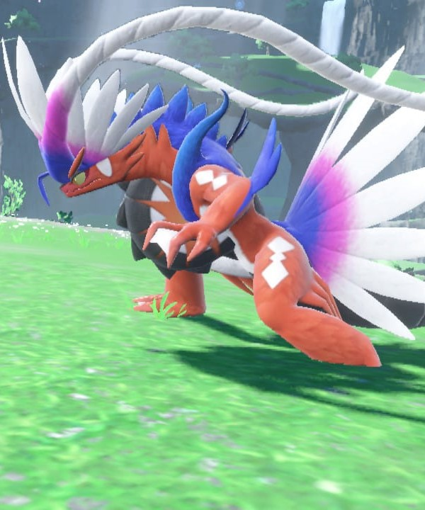
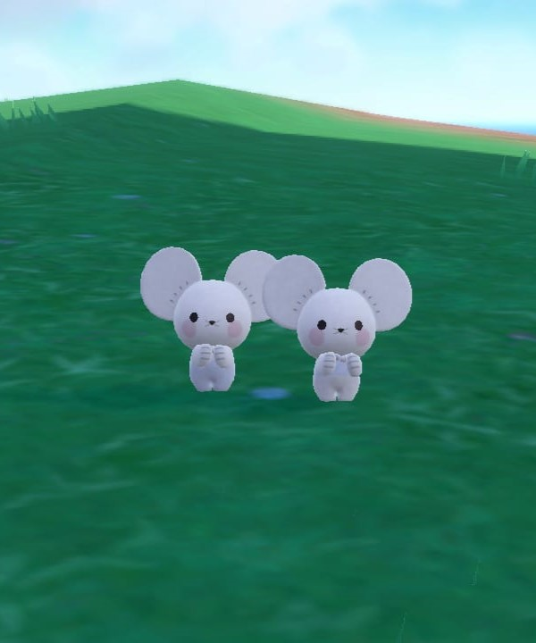

Conhe√ßa a maior franquia do MUNDO! üåè

fonte: canva, autoria Kauani Fermiano Belancieri,
✨ BORA LÁ! ✨O que é a franquia
A franquia Pokemon é considerada uma das franquias mais lucrativas e principalmente icônicas da história, com uma base de fãs sólida e em escala global, ela também abrange várias gerações. Criado por Satoshi Tajiri e desenvolvida pela Game Freak, a saga estreiou no Japão em 1996, com a ideia inicial sendo um jogo para o Game Boy. Ao decorrer dos anos, acabou evoluindo para um fenômeno cultural que se expandiu, virando jogos de cartas colecionavéis, brinquedos, anime e até mangas!
Um dos icones dessa franquia é o pikachu.
Aguardamos mais jogos dessa incrivel franquia!
Galeria

